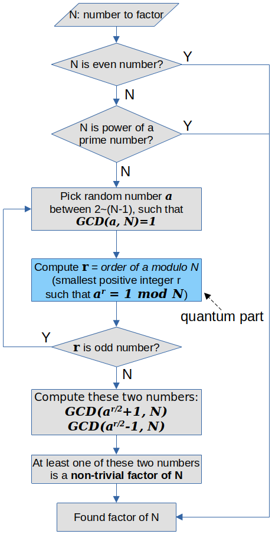

量子计算会终结现在的密码体系吗？(3) Shor算法初探
Ping Zhou, 2021-04-29
上文回顾：因式分解问题可以转化为Order Finding
在上文中，我们分析了为什么因式分解问题可以转化为Order Finding，因此如果能高效求解Order Finding，也就能高效解决因式分解问题。
所谓Order Finding问题，就是已知互质的两个数a和N，求满足 \(a^r=1 \mod N\) 的最小正整数r。
这个问题可以进一步归纳为一个周期求解问题：假如我们定义函数 \(f(x)=a^x \mod N\) ，那么 \(f(x)=f(x+r)\) ，因此这个函数的值是以r为周期的。我们要找的r，就是这个函数的周期。
用量子计算机解决因式分解问题：Shor算法
Shor算法是Peter Shor在1994年提出的一种量子计算算法，可以在多项式时间内求解因式分解问题。
要完整理解这个算法涉及的知识面很多，容易迷失在细节里。我的经验是，先从高层次出发，理解它的总体思路，然后对其中的重要步骤逐一分解研究。
Shor算法求解因式分解问题的过程，分为『经典』部分和『量子』部分：
- 『经典部分』假设要分解的数为N；
- 『经典部分』如果N是偶数，或者N是某个质数的幂，那么已经找到了它的因子，问题解决；
- 『经典部分』在2到N-1之间，随机选一个与N互质的数，即 \(GCD(a, N)=1\) ；
- 『量子部分』 计算a对N模的order，即满足 \(a^r \mod N=1\) 的最小正整数r；
- 『经典部分』如果r是奇数，回到步骤3重新选a；
- 『经典部分』如果r是偶数，计算 \(GCD(a^{r/2}+1, N)\), \(GCD(a^{r/2}-1, N)\), 两者中必有N的非平凡因子。

这就是Shor算法解决因式分解问题的总体思路！
这其中，只有第4步Order Finding需要用到量子计算，因此Shor算法的核心，就是用量子计算机找到a对N模的order。接下来我们来看一下，量子计算机是如何解决Order Finding问题的。
用量子计算机求解Order Finding问题
用量子计算机求解Order Finding问题，实质上是要找到函数 \(f(x)=a^x \mod N\) 的周期。看过我之前文章的朋友可能会想到，首先我们要考虑如何将这个函数整合到我们的量子电路里，也就是把它转换成一个量子电路能用的变换 \(U_f\) 。
为了避免迷失在实现细节里（后文会讨论 \(U_f\) 的实现），咱们先假设已经有了这样一个可逆变换 \(U_f\) ：

这个变换使用2个量子寄存器x和y。这两个寄存器都是由多个量子位构成的，可以把它们看作是多个量子位构成的二进制数。 \(U_f\) 的作用是：
- 输入 \(|x\rangle\) 和 \(|y\rangle\)
- 输出 \(|x\rangle\) 和 \(|y f(x)\rangle = |y a^x \mod N\rangle\)
还记得我们是如何解决Deutsch问题的吗？我们给 \(U_f\) 输入叠加态，然后在输出端经过一些变换就能得到函数的性质。
我们在这个 \(U_f\) 上用一样的套路，会得到什么？

- 第1个寄存器x：初始为 \(|0\rangle\) (注意哦，这是n个量子位组成的二进制数0，不是一个量子位) ，然后通过一个多位的H门，把它制备成 \(|0\rangle, |1\rangle, |2\rangle, \dots, |2^n-1\rangle\) 的等权叠加态：
- 第2个寄存器y：初始化为 \(|y\rangle=|1\rangle\) （也是多个量子位组成的二进制数）。于是在输出端，第2个寄存器就会变成 \(|y f(x)\rangle = |f(x)\rangle = |a^x \mod N\rangle\) 。
(这两个寄存器分别需要多少个量子位，后文会详细讨论，这里为了方便理解，先不用考虑，只需要知道它们都是由多个量子位组成的）
把这样的状态输入 \(U_f\) ，在输出端会得到什么？
还是用上次的例子，N=15, a=7, \(f(x)=7^x \mod 15\) 是一个周期为4的函数：
| \(x\) | \(f(x)\) |
|---|---|
| 0 | 1 |
| 1 | 7 |
| 2 | 4 |
| 3 | 13 |
| 4 | 1 |
| 5 | 7 |
| 6 | 4 |
| 7 | 13 |
| \(\dots\) | \(\dots\) |
先考虑第2个寄存器：
假如在输出端对它进行测量，得到的是 f(x) 的某个值，也就是上面表中的第2列的某个值，我们称它为 z 。
别忘了，f(x) 是一个 以4为周期的函数 ，所以这个z的取值只可能是 1, 7, 4, 13 其中之一，对不对？
好，进一步假设我们在第2个寄存器上测到了某个 z=4 ，然后回过头看第1个寄存器：
第1个寄存器存的是函数 f(x) 的参数x，在输入端，它被制备成 \(|0\rangle, |1\rangle, \dots |2^n-1\rangle\) 的叠加态。
但是！我们知道经过对第2个寄存器的测量，f(x) 的值已经坍缩到了 z=4 ，所以这时候如果我们测量第1个寄存器，得到的x值必须是满足 \(4 = 7^x \mod 15\) 的某个数，也就是 2, 6, 10, 14, … 之一。换句话说，这时如果我们放着它不测量，它现在的状态就是 \(|2\rangle, |6\rangle, |10\rangle, \dots\) 的等权叠加态！
看出什么门道没有？
我们在输出端测量第2个寄存器，使它坍缩到某个值z，这样第1个寄存器的状态就会变成 满足 \(z=a^x \mod N\) 的所有x的叠加态 ！
写的通用一点，如果第2个寄存器的测量坍缩到值z，而 \(l\) 是满足 \(a^l \mod N = z\) 的最小整数，那么第1个寄存器的状态就变成了 \(|l\rangle, |l+r\rangle, |l+2r\rangle, \dots, |l+Ar\rangle\) 的叠加态（前面图中的 \(|\alpha\rangle\) ）：
\begin{matrix} |\alpha\rangle = \frac{1}{\sqrt{A+1}} \sum_{j=0}^{A}|jr+l\rangle \end{matrix}这里的 \(l\) 称为offset，而A就是在 \(0 \sim 2^n-1\) 内 总共有多少个周期 （即小于 \((2^n-1)/r\) 的最大整数）。
到这里是不是觉得离目标不远了？
先别急着高兴……就算我们知道第1个寄存器是 \(|l\rangle, |l+r\rangle, |l+2r\rangle, \dots, |l+Ar\rangle\) 的叠加态，但如果直接测量它的话，每次只能得到其中的1个值，多次运行这个电路，我们也只能得到一组随机的 \(l+jr\) 值，其中 \(l\) 和 \(j\) 都是随机的未知数（因为每次得到的z值也是随机的），我们还是没法从中推断出 \(r\) 的值。怎么办呢？
熟悉信号处理的朋友可能会想到了：既然 f(x) 是一个周期函数，我们对它作 傅里叶变换 ，不就能得到它的频率（周期）了吗？
恭喜你答对了！我们的下一步，就是对 \(U_f\) 的输出做 量子傅里叶变换 ！